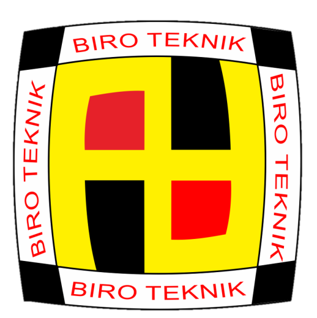
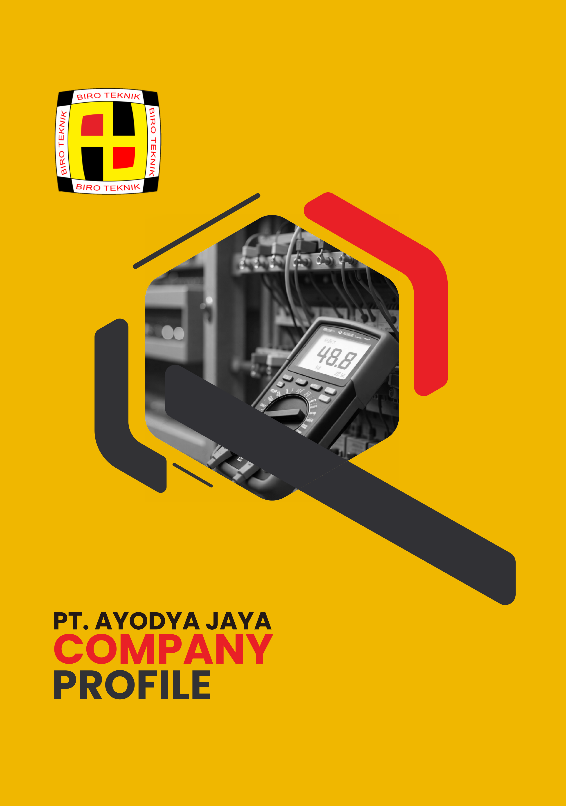
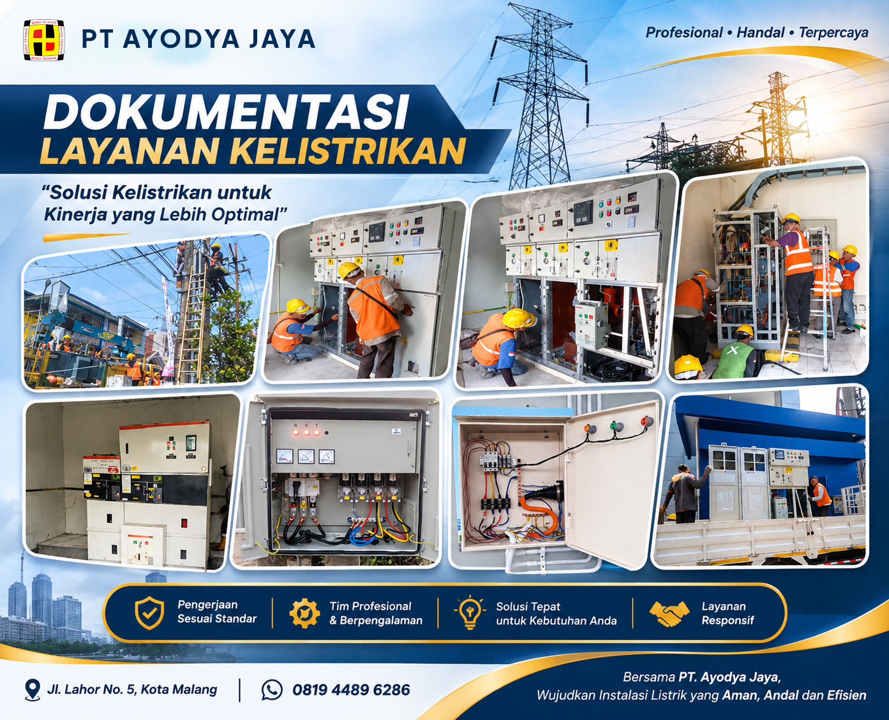
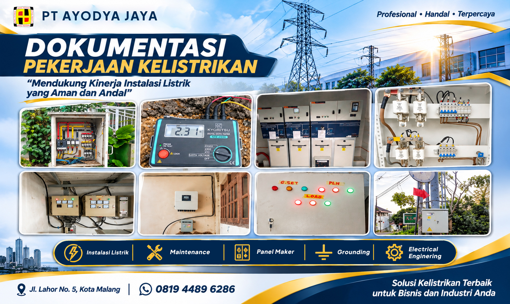
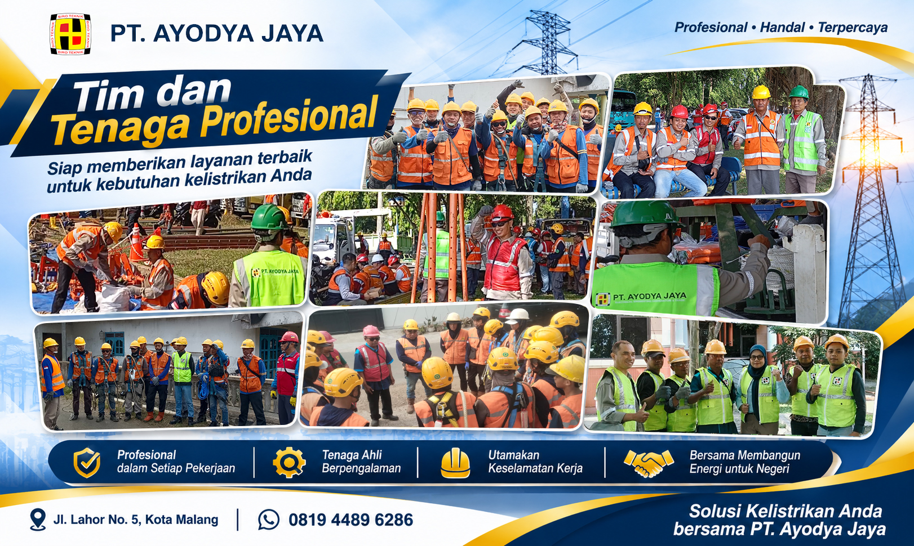

Pengurusan NIDI & SLO
Pengurusan Nomor Identitas Instalasi (NIDI) dan Sertifikat Laik Operasi (SLO).

Electrical Engineering & ServicesPartner profesional untuk kebutuhan instalasi, konstruksi, pemeliharaan, dan engineering sistem kelistrikan industri maupun gedung.

Sejak berdirinya perusahaan pada tahun 1977, Divisi Mekanikal & Elektrikal adalah cikal bakal dan awal bisnis perusahaan kami. Setelah berjalan sekian lama berkat divisi ini, PT. Ayodya Jaya telah menjadi perusahaan kontraktor yang berkembang.
Ini terwujud berkat kepercayaan bisnis yang diberikan oleh pelanggan kepada perusahaan kami. Untuk Legalitas dan Standarisasi dalam melaksanakan proyek yang dilaksanakan, PT. Ayodya Jaya telah masuk dalam daftar keanggotaan asosiasi yang berskala nasional dalam dunia ketenagalistrikan dan mekanikal yaitu:
- Asosiasi Kontraktor Listrik dan Mekanikal Indonesia (AKLI).
- Asosiasi Profesional Elektrikal Indonesia (APEI).
PT. AYODYA JAYA adalah sebuah perusahaan yang bergerak dalam bidang kontraktor serta jasa.
Pengurusan Nomor Identitas Instalasi (NIDI) dan Sertifikat Laik Operasi (SLO).
Instalasi sistem penyalur petir beserta pengurusan perizinannya.
Pembuatan panel listrik (panel maker) dan pekerjaan wiring panel.
Perencanaan dan pelaksanaan konstruksi listrik dan elektrikal, meliputi tegangan rendah (220V) hingga tegangan menengah (20 kV).
Jasa teknis dan pemeliharaan yang berhubungan dengan sistem kelistrikan, termasuk pembersihan panel dan peralatan terkait.
Pengadaan barang dan jasa di bidang mekanikal dan elektrikal.
Memprediksi potensi kerusakan sebelum terjadi gangguan atau kegagalan, sehingga perbaikan dapat dilakukan lebih awal.
Layanan perawatan dan pemeriksaan sistem kelistrikan di area industri dan perkantoran, baik tanpa mematikan listrik (online) ataupun dengan pemadaman terjadwal (offline). Bertujuan menjaga kestabilan dan keamanan sistem listrik, meliputi panel distribusi, panel tegangan menengah (cubicle), dan transformator.

Kami percaya keberhasilan pekerjaan merupakan hasil profesionalitas, kualitas kerja, dan komitmen untuk memenuhi kebutuhan pelanggan sejak tahap perencanaan hingga penyelesaian pekerjaan.
Dokumentasi dari pekerjaan dan team PT Ayodya Jaya.


PT. Ayodya Jaya pernah bekerja sama dengan berbagai perusahaan, instansi, dan tempat usaha.
Diskusikan kebutuhan proyek Anda ↗Konsultasikan kebutuhan instalasi, konstruksi, engineering, maupun pemeliharaan kelistrikan bersama tim PT. Ayodya Jaya.
Hubungi via WhatsApp ↗